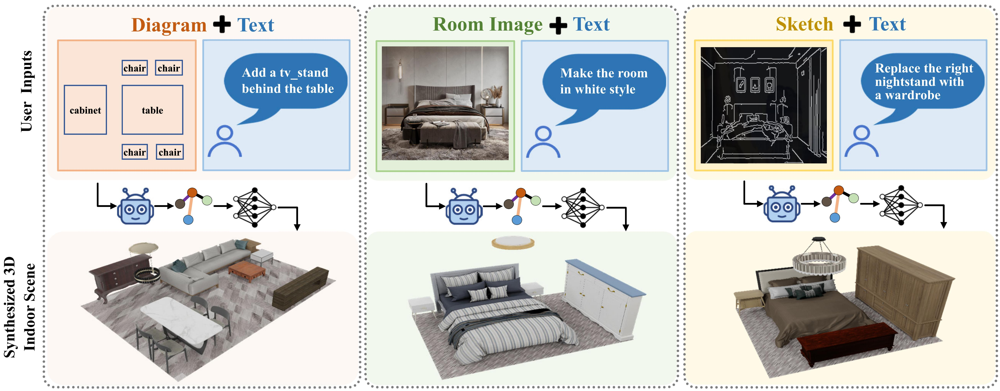

FreeScene: Mixed Graph Diffusion for 3D Scene Synthesis from Free Prompts

Controllability plays a crucial role in the practical applications of 3D indoor scene synthesis. Existing works either allow rough language-based control, that is convenient but lacks fine-grained scene customization, or employ graph based control, which offers better controllability but demands considerable knowledge for the cumbersome graph design process. To address these challenges, we present FreeScene, a user-friendly framework that enables both convenient and effective control for indoor scene synthesis. Specifically, FreeScene supports free-form user inputs including text description and/or reference images, allowing users to express versatile design intentions. The user inputs are adequately analyzed and integrated into a graph representation by a VLM-based Graph Designer. We then propose MG-DiT, a Mixed Graph Diffusion Transformer, which performs graph-aware denoising to enhance scene generation. Our MG-DiT not only excels at preserving graph structure but also offers broad applicability to various tasks, including, but not limited to, text-to-scene, graph-to-scene, and rearrangement, all within a single model. Extensive experiments demonstrate that FreeScene provides an efficient anduser-friendly solution that unifies text-based and graph based scene synthesis, outperforming state-of-the-art methods in terms of both generation quality and controllability in a range of applications.
Given a reference image, text, or either of them, a carefully designed agent called Graph Designer analyzes the objects and their spatial relationships, constructing a partial graph prior that captures both the object types and their spatial relationships. Next, leveraging the proposed MG-DiT, we apply a constrained sampling method that preserves the integrity of the graph prior throughout the noising and denoising processes, while generating the remaining parts. Ultimately, we obtain the complete room layout and perform object retrieval from the 3D-FUTURE dataset, retrieving each object with the most similar OpenCLIP feature (derived from the generated fVQ-VAE indices) within the same category.
Acknowledgements: This research was supported in part by the National Natural Science Foundation of China (No. 62202199, 62302269), the Excellent Young Scientists Fund Program (Overseas) of Shandong Province (No. 2023HWYQ-034) and the Fundamental Research Funds for the Central Universities.